Trigonometry
Trigonometry (trig) is the math dealing with triangles, but as you'll soon see, it relates really closely to rotations.
There are two basic trig functions, \( \text{sine} \) and \( \text{cosine} \).
You may be familiar with functions like $$f(x) = 3 \cdot x+1$$ or they may be written as $$y=3\cdot x+1$$
These both represent the same thing, a simple line. \( f(x) \) represents being able to "plug" in a value of \( x \) into \( 3\cdot x + 1\). For example, $$f(6) = 3\cdot 6 + 1 = 17$$
These can be written into a table so we can easily see what different values \( f(x) \) can be:
| \( x \) | \(f(x) = 3\cdot x+1\) |
|---|---|
| \(0\) | \(3\cdot 0+1=1\) |
| \(1\) | \(3\cdot 1+1=4\) |
| \(2\) | \(3\cdot 2+1=7\) |
| \(3\) | \(3\cdot 3+1=10\) |
Now, \( \text{sine} \) and \( \text{cosine} \) are also just some functions, except a little more complicated. Instead of doing some simple arithmetic on some number, \( \text{sine} \) and \( \text{cosine} \) take an angle as an input, and output a ratio between two sides of a triangle. Let's look at \( \text {sine} \) first.
Sine
\( \text{sine} \) (often abbreviated as \( \sin \)) takes an angle as an input. This angle is typically given this symbol: \( \theta \) called theta.
It is probably easiest to view an example of what \( \sin \) outputs. Let's say we input \( 30^{\circ}\) into \( \sin \). This is represented as \( \sin(30^{\circ}) \).
What \( \sin(30^{\circ}) \) outputs, therefore, is the ratio between two sides of a triangle, but which two sides and what triangle?
Imagine that you and a friend are standing at some point on a road. There is an intersection coming up. You want to stay on the road but your friend wants to cut the corner by turning 30 degrees from the road.
In this example, \( \sin(30^{\circ}) \) is the ratio between the distance your friend skipped and the distance your friend traveled.
$$\sin(30^{\circ}) = \frac{\text{skipped distance}}{\text{friend's distance}}$$
For ease, let's call:
- the distance you traveled, adjacent (adj), since it is adjacent to the angle
- the distance skipped, opposite (opp), since it is opposite to the angle
- the distance your friend traveled, hypotenuse (hyp), for Greek reasons
So now we are left with $$\sin(30^{\circ}) = \frac{\text{opp}}{\text{hyp}}$$ for that particular triangle.
It actually doesn't matter exactly what the side lengths are, as long as the respective angle is \( 30^{\circ} \). If you went out and measured this ratio yourself, you'd find that this ratio is always \( 0.5 \).
Cosine
\( \text{cosine} \) (often abbreviated as \( \cos \)) also takes an angle as an input. It is very similar to \( \sin \); going back to the road example, \( \cos(30^{\circ}) \) is the ratio between the distance you traveled and the distance your friend traveled. $$\cos(30^{\circ}) = \frac{\text{your distance}}{\text{friend's distance}}$$
Going back to the adj, opp, and hyp labels from earlier, $$\cos(30^{\circ}) = \frac{\text{adj}}{\text{hyp}}$$
Again, measuring this ratio yourself would result in about \( 0.866 \).
Sine and Cosine Summary
This process can be done for any angle you want! There are more mathematical ways to express what \( \text{sine} \) and \( \text{cosine} \) exactly are, but they aren't relevant to this.
What follows is a table showing some of the angles from 0 to 90 degrees
| \( \theta \) | \(\sin(\theta)\) | \(\cos(\theta)\) |
|---|---|---|
| \(0^{\circ}\) | \(0\) | \(1\) |
| \(15^{\circ}\) | \(0.259\) | \(0.966\) |
| \(30^{\circ}\) | \(0.500\) | \(0.866\) |
| \(45^{\circ}\) | \(0.707\) | \(0.707\) |
| \(60^{\circ}\) | \(0.866\) | \(0.500\) |
| \(75^{\circ}\) | \(0.966\) | \(0.256\) |
| \(90^{\circ}\) | \(1\) | \(0\) |
The Unit Circle
The last part of trigonometry is how it relates to rotations. The link can be seen using something called the unit circle.
The unit circle is simply just a circle of radius 1. That means that the distance from the center to the edge is only 1.
Now, imagine a point on the circle. Because the distance from the center to the edge of the unit circle is 1, the distance from the point to the center is also 1.
If we want to know some other properties about that point, we can use trigonometry! We can draw two lines for the point's \( x \) and \( y \) position. Suddenly, we have a very similar looking triangle!
From before, we know that $$\sin(\theta) = \frac{\text{opp}}{\text{hyp}}, ~\cos(\theta) = \frac{\text{adj}}{\text{hyp}}$$ and since we know that the hypotenuse is \( 1 \) on a unit circle, dividing by \( 1 \) does nothing and so, $$\sin(\theta) = \text{opp}, ~\cos(\theta) = \text{adj}$$
Therefore,
- the \(x \) coordinate of the point is exactly \( \cos(\theta) \)
- the \(y \) coordinate of the point is exactly \( \sin(\theta) \)
So, by using \( \text{sine} \) and \( \text{cosine} \), we can always rotate a point to any angle on the unit circle!